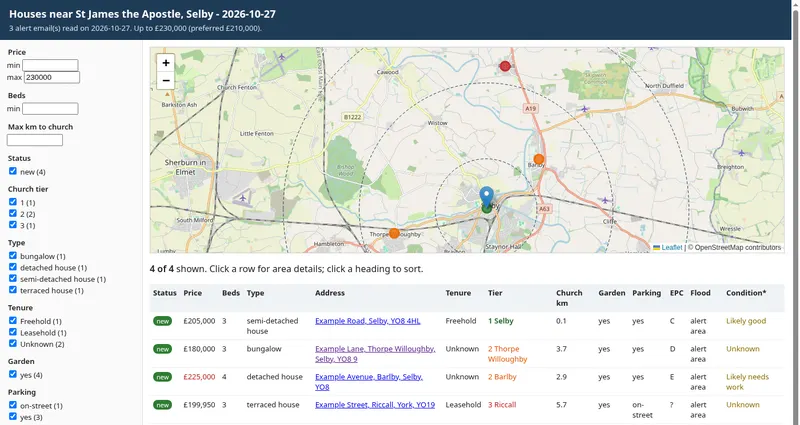

Daily house brief
Turns property alert emails into a short daily summary and a filterable report with a map, distance to church and likely costs.

What it is
Each morning it reads new property alert emails, removes repeats and produces a short summary plus a report you can sort and filter, with a map.
Why I built it
House hunting meant dozens of alert emails a day. The same approach can turn any pile of routine emails into one clear daily update.
How it's built
Python scripts that parse the emails, add area details and travel distance, and write a static HTML report.
Status and limits
Built for my own search. Costs are estimates, and parsing depends on the alert email format.